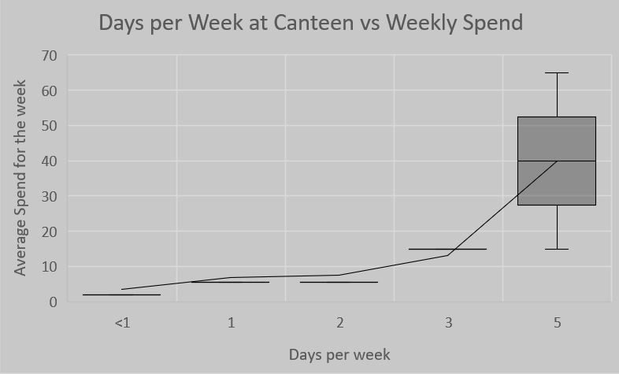

| Main Page | McDonalds Data | Canteen Data | Surveys and Interviews | Miscellaneous |
General Canteen Statistics |
||
|  | Generally, the more a student visits the canteen in a week, the more they will spend. 1-3 days/week shows little veriation, most students spending around $5 a week. 5 days shows great variation, probably due to why students are eating canteen food, such as if it is their main source of lunch, or getting just snacks everyday. It is clear that students who go to the canteen for their daily recess and lunch would spend more. |
|
There is a clear destinction in demand from students to add Hot Chips to the canteen.
|
||
Factors behind consumption of canteen food |
||
When is comes to what students are looking for when they purchase food, there is a trend towards the following: -Taste -Cost -Familiarity Students will prefer to eat food which they know is tasty and cheap. |
||
| Comparision of what students look for in the canteen | ||
|
|
The main reason students visit the canteen is hunger, as 18% of students said they fealt this way. Next most common reason that effect wether or not they visit the canteen includes how busy the canteen is, and what specials are on. |
This students comments on the inconvinent nature of the canteen ID system. This is a common turn off for students with the intention of visiting the canteen. |
|